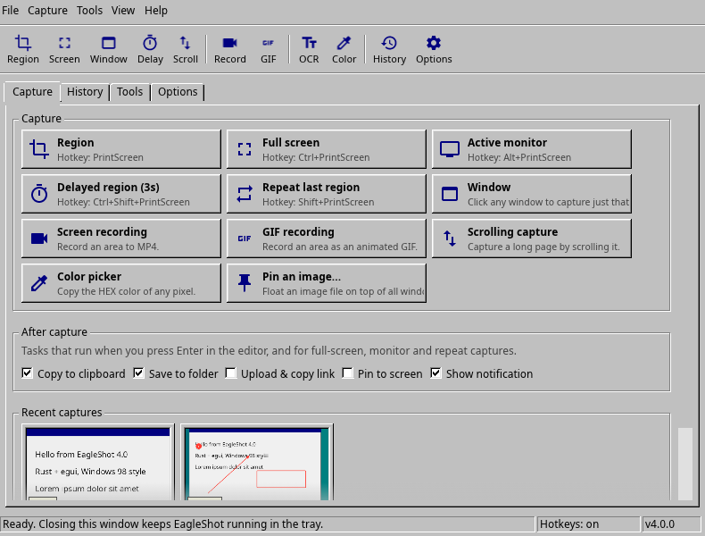
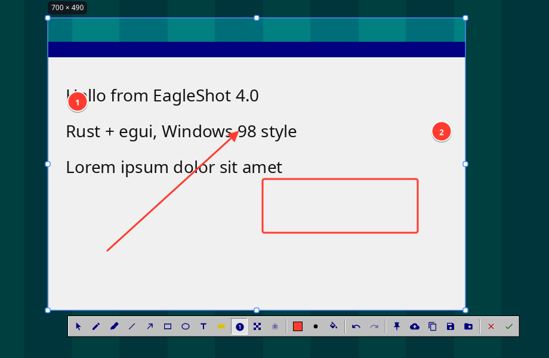
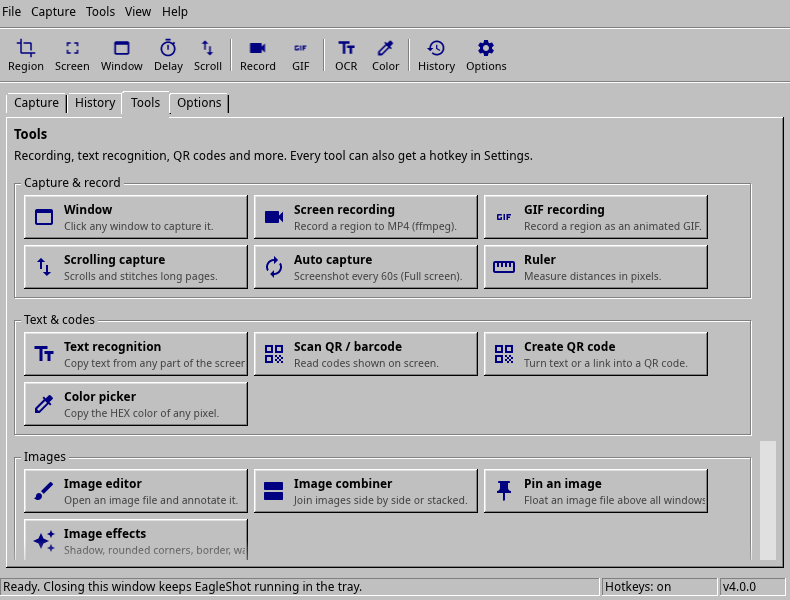
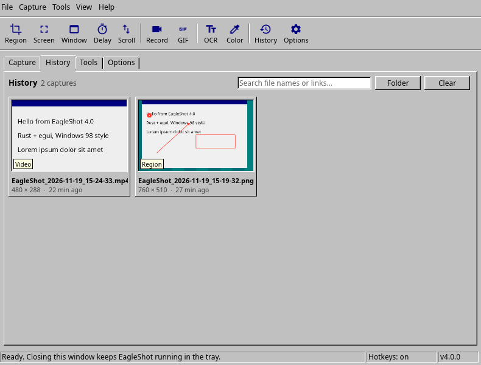
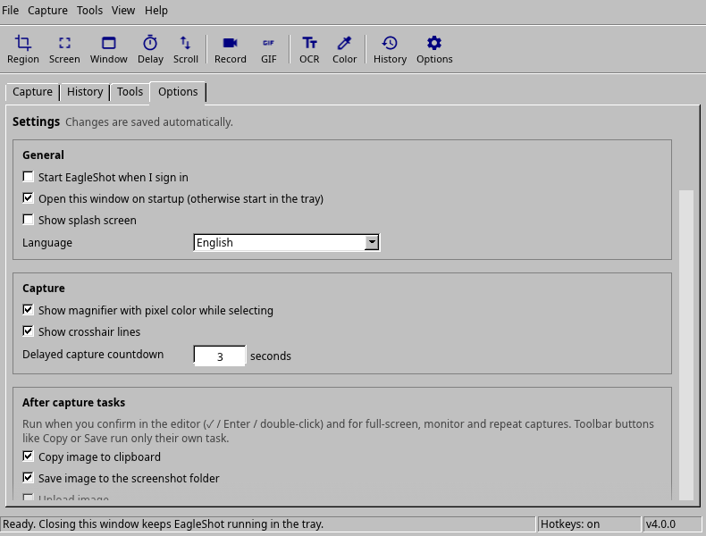

EagleShot
Screenshots, screen recording and capture tools. Free and open source.
Press PrintScreen, select an area, annotate it and copy, save, pin or upload it. Record the screen to MP4 or GIF, grab long scrolling pages, read text with OCR and scan QR codes. It is like ShareX and Lightshot, in a familiar retro interface, on Windows, macOS and Linux.

78 seconds of EagleShot: region capture and annotation, menus, text recognition, screen recording and 11 languages.
Features
Region, full screen, monitor
Drag to select with a magnifier and pixel colors, or grab a whole monitor in one click.
Annotation editor
Pen, marker, arrows, shapes, text, highlight, step numbers, pixelate and blur. Undo and redo included.
MP4 screen recording
Select an area, press Start. A small bar shows the timer, Stop and Cancel.
Animated GIF
Record a region straight to a GIF for chats and bug reports.
Scrolling capture
Scrolls a page or document and stitches it into one long image.
Text recognition (OCR)
Select any text on screen and copy it. Reads English plus your own language.
Upload
Imgur, any HTTP endpoint, or ShareX .sxcu uploaders. The link is copied for you.
Pin to screen
Keep a screenshot floating above all windows. Zoom it, fade it, move it.
QR codes
Scan QR codes and barcodes from the screen, or create your own.
Screenshots




Download
Windows 10 / 11
Installer includes FFmpeg (recording) and Tesseract OCR
Installer (.exe) Portable (.zip)Installing on Windows
- Run
EagleShot_Setup_…_win-x64.exeand follow the steps. - Keep “Use the PrintScreen key for EagleShot” checked so PrintScreen opens EagleShot instead of the Snipping Tool.
- If Windows SmartScreen warns you, click More info → Run anyway (the app isn't code-signed).
macOS
Apple Silicon (M1/M2/M3/M4) and Intel
Apple Silicon (.dmg) Intel (.dmg)Installing on macOS
- Easiest: open Terminal and run
curl -fsSL https://hhasanguclu.github.io/EagleShot/install-macos.sh | bashIt installs EagleShot without the security warning. - With the
.dmg: drag EagleShot to Applications. - If macOS offers Move to Trash (“can't be verified” or “damaged”), click Done, then System Settings → Privacy & Security → Open Anyway. EagleShot isn't signed with a paid Apple certificate.
- Allow Screen Recording and Accessibility (for hotkeys).
Linux x64
X11 and Wayland (GNOME, KDE)
.tar.gzInstalling on Linux
- Extract the archive:
tar xzf EagleShot_…_linux-x64.tar.gz - Run
./installers/linux/install.shinside the extracted folder. - Optional:
xcliporwl-clipboardfor the clipboard,ffmpegfor recording,tesseract-ocrfor OCR.